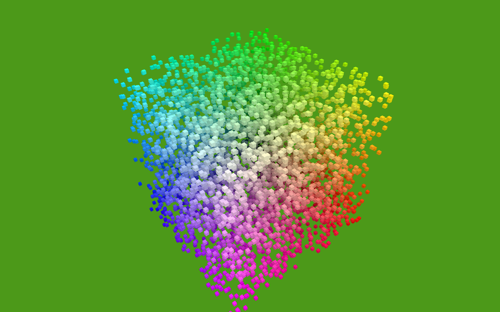

Flying High: OpenGL from Python, Part 2
This is second in a series of articles about algorithmically generating geometry to drive OpenGL from Python.
Last time we got as far as creating some instances of our super-simple Shape class, and having Glyph and Render classes convert those to arrays for OpenGL and render them. This time, we start using that infrastructure to create some more interesting geometries, which means there's less code, and more pretty pictures.
Composite Shapes
In order to create more complex shapes by composing instances of existing ones, we need a simple composite shape:
class MultiShape(object): def __init__(self): self.children = [] self.matrices = [] def add(self, child, pos=None, orientation=None): self.children.append(child) self.matrices.append(Matrix(pos, orientation))
A MultiShape contains a list of child Shapes, and a matrix for each child, indicating the child's position and orientation relative to the MultiShape's front-and-center.
This is probably as good a point as any to confess that for the purposes of this demo, I ended up writing my own Matrix class, along with my own Orientation class. Even my Vec3, which earlier I showed you defined as a named tuple, gradually started to sprout some methods, until it became a fully-formed custom vector class. This was pretty silly - it easily doubled the size of my code-base, and while it felt like rewarding and productive work, it was actually a waste of time. With hindsight, I should have predicted this would happen, and started out using an existing library for things like this, such as Euclid or Numpy. Way it goes.
Anyhow, if a Multishape is going to be usable wherever a Shape is currently used, it needs to provide the same interface, which luckily is very simple - it just needs to provide iterables of vertices, faces and face_colors. Here is how MultiShape provides a sequence of vertices, by chaining the vertices of all its children, each vertex transformed by the matrix of the relevant child shape:
@property def vertices(self): return ( matrix.transform(vertex) for child, matrix in zip(self.children, self.matrices) for vertex in child.vertices )
There is an inefficiency to this. When MultiShapes are nested, I'm transforming each vertex once for every branch in the tree. It would be cheaper to just multiply the matrices of nested MultiShapes, and then have the top-level MultiShape apply the resulting transforms to the vertices of each of its children. However, we're only performing this work at application start-up, not every frame, so I'm choosing to eat it for the sake of simple-as-possible code.
Similar properties are defined on MultiShape to provide sequences of face indices and face_colors, by aggregating those of its children.
Using MultiShape, we can now easily compose groups of our basic Shapes. A new factory function composes a bunch of cubes into the same MultiShape:
def CubeCorners(edge, color1, color2): multi = MultiShape() multi.add( Cube(edge, repeat(color1)), position=Origin, ) for pos in list(product(*repeat([-1, +1], 3))): multi.add( Cube(edge/2, repeat(color2)), position=Vec3(*pos) * (edge / 2), ) return multi

Another new factory function, RingOf:
def RingOf(child, radius, number): multi = MultiShape() angle = 0 orientation = Orientation() delta_angle = 2 * pi / number while angle < 2 * pi: angle += delta_angle pos = Vec3(0, radius * sin(angle), radius * cos(angle)) orientation.pitch(delta_angle) multi.add(child, pos, orientation) return multi
returns copies of a given child shape, arranged in a ring, such as this ring of cubes:

A ring of truncated cubes:

A ring of interpenetrated tetrahedrons:

This is just starting to look a bit like a thorny geometric mushie trip, which in this context I'm counting as a success.
If we can compose basic shapes into rings, we can also compose rings into... um... tri-axis-rings:
def TriRing(edge, radius, number, colors): multi = MultiShape() ring = RingOf(Cube(edge, colors), radius, number) multi.add(ring, orientation=Orientation(XAxis)) multi.add(ring, orientation=Orientation(YAxis)) multi.add(ring, orientation=Orientation(ZAxis, XAxis)) return multi
If you look carefully, you can make out some depth-buffer fighting where the three rings intersect, but I'm moving too fast to worry about that now.

Because we're drawing each MultiShape using a single iteration of the Render.draw() loop, we've massively reduced the overhead in drawing each Shape, so we can easily add all of these at once into the world at 60fps, although it does form a bit of a visual cacophony:

I wonder how much stuff we can add into a MultiShape before it starts to affect the framerate? Let's investigate... How about a spherical glob of red blood cubes:

It turns out I can get about 14,000 cubes (168,000 triangles) [1] into a single MultiShape like this before the framerate starts to drop. I'm still rendering these as regular ctypes arrays, not OpenGL vertex buffers (I don't think my hardware supports that), so all the geometry is being sent needlessly over the bus to the GPU every frame.
How about an alternative, the RgbCubeCluster:
def RgbCubeCluster(edge, cluster_edge, cube_count): cluster = MultiShape() for _ in xrange(cube_count): color = Color.Random() pos = Vec3( color.r - 128, color.g - 128, color.b - 128, ) * (cluster_edge / 256) cluster.add( shape=Cube(edge, repeat(color)), position=pos, ) return cluster
This creates a cluster of cubes, each one colored by its position in RGB space.

We still have enough oomph left over to dive the camera right into the midst of the RgbCubeCluster and reveal that all the previous stuff is still in the world too:

Recursively Generated Geometry
Can we make any more interesting recursively-defined geometry? The first thing I thought of (no doubt this has been done many times before) was the 3D equivalent of a Koch curve: Take a tetrahedron, and for each face, embed a new, smaller tetrahedron sticking out of it. Recursively repeat this for each of the new smaller triangles that have been formed.
The first time I coded this, successive iterations literally replaced every new surface triangle that was formed by the process, with an arbitrary break after eight or so iterations. I was quite surprised by the result, which turned out to look like a slightly corrugated cube. At first I naturally assumed that a bug in my code was the cause, but after a period of contemplation, I realised this was the correct geometric result. The reason for it can be seen in this Wikimedia diagram of the first three iterations of forming a Koch surface:

The first iteration replaces every triangle by sticking a new tetrahedron out of it - exactly as I had done for every face of my original. The next iteration sticks smaller tetrahedrons onto every new surface, and the edges of these new, smaller tetrahedrons all line up with each other, to form long, contiguous straight seams in the resulting shape. By the third iteration (the final one shown here) the end result is becoming apparent. Each successive iteration merely reduces the size of the ridges - the overall shape of the surface is unchanged.
I modified my algorithm to only replace the triangular faces of the newly-formed smaller tetrahedrons, rather than replacing every triangular surface, and the result is this more pleasing snowflake shape.

This algorithm is about 60 lines of code. A similar operation can be done on a cube, by poking a new, smaller cube out of each of its faces:

The deeper red parts are the original cube and the early generations of children. The lighter yellow parts are the later generations.
The final and best example in this section was supplied by Oscar Lindberg, who was interested enough on my old blog post about this to download the code and produce some shapes of his own. Screenshots can't do it justice, but the full stately geometry becomes wonderfully apparent when it's in motion. The tetrix, aka the Sierpinski tetrahedron:

Odds and Ends
That's about all I've got to show you. Overall I'm really pleased by this, and excited to do some more of the same going forward.
You may have noticed I've cheated a little in the demo / screenshots - some of them show clear evidence of the rudimentary lighting shader I added (e.g. topmost faces are slightly lighter in color than other faces.) It would be simple enough to fake this, by providing slightly varying colors for each face of our shapes, but for those of you looking at the code: I didn't do that. Instead, I had Glyph generate arrays of surface normals, which is done by Glyph.get_glnormals(), which works pretty much just like all the other Glyph methods we examined in part 1. I was getting tired of explaining how Glyph worked, so I figured you were probably getting tired of it too, and wouldn't mind if I skipped a little which wasn't strictly necessary.
I was initially a little disappointed by the performance at rendering many independently positioned and oriented objects, but now it's picked up (see footnote [1]) and is now perfectly acceptable: a little over 450 separately moving cubes at 60fps. The OpenGL bindings in PyOpenGL wisely choose to prefer correctness and robustness over performance by default, so as a result, calling OpenGL from Python is not fast out of the box. The PyOpenGL documentation suggests many ways in which this performance can be regained once your program is working and debugged. I'm not yet using any of these suggestions, so hopefully my sluggish performance could be improved substantially.
In addition, Richard Jones suggested that the innermost Render.draw() loop could possibly benefit from Cython (optional static typing to be added to code written in a less-dynamic subset of Python.) This would not just improve the general performance of the code in that loop, by actually compiling it to C, but in doing so, it would eliminate the Python / C boundary performance penalties, and this is something I'm excited to try out in the near future.
[1] Update: A couple of hours after hitting publish on this, I discover that switching from the PyOpenGL bindings to those built into pyglet gives me two to four times the frame rate, for zero code change except the imports. Clearly I don't understand how to get the best performance out of PyOpenGL. I've been back and updated the performance stats in this post, and hope to make another post about this at some point when I understand what I was doing wrong.
The demonstrated code is available at https://github.com/tartley/gloopy
Comments
Comments powered by Disqus